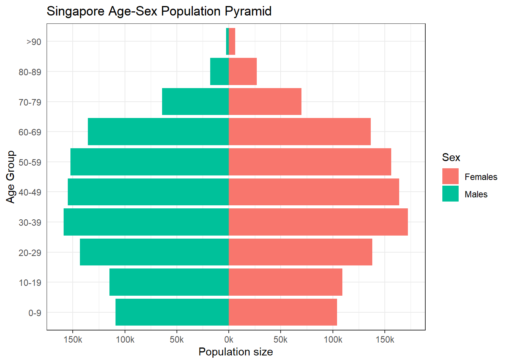

packages = c('tidyverse', 'plotly', 'ggplot2')
for(p in packages){
if(!require(p,character.only = T)){
install.packages(p)
}
library(p,character.only = T)
}Take-home Exercise 2
Creating data visualisation beyond default
1. The task
In this take-home exercise, we are required to:
- select one of the Take-home Exercise 1 prepared by our classmate,
- critic the submission in terms of clarity and aesthetics,
- prepare a sketch for the alternative design by using the data visualisation design principles and best practices we had learned in Lesson 1 and 2, and
- remake the original design by using ggplot2, ggplot2 extensions and tidyverse packages.
The purpose of DataVis Makeover is to improve on the original visualisation. Focus on what works, what doesn’t work, why those things don’t work, and how you made it better. You should try stick to the fields in the data set provided and improve upon the original visualisation.
2. Data
“Singapore Residents by Planning Area / Subzone, Age Group, Sex and Type of Dwelling, June 2022” is used to prepare the analytical visualization. It is available at Department of Statistics, Singapore(SingStat).
Metadata
PA = Planning Area
SZ = Subzone
AG = Age Group
Sex = Sex
TOD = Type of Dwelling
Pop = Resident Count
Time = Time / Period
Note:
- For June 2022, Planning Areas refer to areas demarcated in the Urban Redevelopment Authority’s Master Plan 2019.
- Data from 2003 onwards exclude residents who have been away from Singapore for a continuous period of 12 months or longer as at the reference period.
- The figures have been rounded to the nearest 10. 4) The data may not add up due to rounding.
Date generated: 29/02/2022 Source: Singapore Department of Statistics
3. Critique on Original Design
Age-sex pyramid is an analytical visualization commonly used by demographers to reveal the structure of population by gender and age group. In addition, the Trellis plot style is employed to facilitate comparisons between planning areas.
Below is the original design of the plot that will be redesigned.

Clarity
When developing a plot, we should have a particular message or insights to communicate to the audience. In our scenario, possible inferences from the trellis age-sex pyramid are as follows:
- The pyramidal structure that represents the distribution of each gender within each age group in each planning area
- The varied distribution across each region
In this section, we will evaluate the original plot based on how effectively it conveyed the above inferences to the audience.
(a) Data Selection
Instead of presenting the entire data set to the viewer, we might pick sample subsets of data that are appropriate for the intended message. By mapping all planning regions, it is extremely difficult for the viewer to compare areas of interest.
(b) Graph Title
Instead of the conventional title, an interesting insight from the graph could be used as as the main title for the chart, as it encourages curiosity among readers to dig deeper into it. The original title lacks both clarity and appeal.
(c) Plot arrangement
The primary benefit of Trellis plot is that it facilitates comparison. The initial layout placed each plot on the diagonal, making comparison very difficult for the observer. It also restricts the number of plots that may be seen at once.
(d) Y-Axis labeling
The initial axis represented age range by a single integer. This makes it unclear to the observer whether the displayed value represents the age or the upper or lower bound. Additionally, the Null group is not a representative designation.
(e) x-Axis not able to see
Due to the size of the plot, the x-Axis label cannot be seen unless the viewer scrolls all the way down. Not only is the bar size unclear, but the gender is also difficult to determine.
(f) Color representation
Color is very crucial in visualizing. However, the original plot does not make advantage of it, making it more difficult for viewers to identify gender.
(f) Data Label
The planning area label is plotted on the axis rather than within the plot, making it difficult for the observer to identify the planning area to which the plot belongs.
(g) Resolution settings
The resolution is not adjustable. In a smaller screen, the axis is not visible.
4. Proposed Sketch

5. Step to create plot in R
1. Installing and loading the required libraries
The code chunk below is used to install and load the required packages onto RStudio.
- tidyverse : A collection of core packages designed for data science, used extensively for data preparation and wrangling.
- plotly: Used for creating interactive web-based graphs.
- ggplot2: A system for ‘declaratively’ creating graphics, based on “The Grammar of Graphics”.
2. Importing the dataset
The source file is in csv format, hence read_csv of readr package is used to import the dataset.
Popdata2022 <- read_csv("Data/respopagesextod2022.csv")
summary(Popdata2022) PA SZ AG Sex
Length:100928 Length:100928 Length:100928 Length:100928
Class :character Class :character Class :character Class :character
Mode :character Mode :character Mode :character Mode :character
TOD Pop Time
Length:100928 Min. : 0.00 Min. :2022
Class :character 1st Qu.: 0.00 1st Qu.:2022
Mode :character Median : 0.00 Median :2022
Mean : 40.44 Mean :2022
3rd Qu.: 20.00 3rd Qu.:2022
Max. :2300.00 Max. :2022 Use head command to see the first 5 rows of the data.
head(Popdata2022,5)# A tibble: 5 × 7
PA SZ AG Sex TOD Pop Time
<chr> <chr> <chr> <chr> <chr> <dbl> <dbl>
1 Ang Mo Kio Ang Mo Kio Town Centre 0_to_4 Males HDB 1- and 2-Room … 0 2022
2 Ang Mo Kio Ang Mo Kio Town Centre 0_to_4 Males HDB 3-Room Flats 10 2022
3 Ang Mo Kio Ang Mo Kio Town Centre 0_to_4 Males HDB 4-Room Flats 10 2022
4 Ang Mo Kio Ang Mo Kio Town Centre 0_to_4 Males HDB 5-Room and Exe… 30 2022
5 Ang Mo Kio Ang Mo Kio Town Centre 0_to_4 Males HUDC Flats (exclud… 0 20223. Wrangling data
3.1 Select focus column
In this stage, we take only four columns from the original dataset Popdata2022, namely PA (Planning Area), AG (Age Group), Sex (Gender), and Pop (Number of People), and assign them to the new dataset Popdata.
Popdata <- Popdata2022 %>%
select(PA, AG, Sex, Pop)
head(Popdata,5)# A tibble: 5 × 4
PA AG Sex Pop
<chr> <chr> <chr> <dbl>
1 Ang Mo Kio 0_to_4 Males 0
2 Ang Mo Kio 0_to_4 Males 10
3 Ang Mo Kio 0_to_4 Males 10
4 Ang Mo Kio 0_to_4 Males 30
5 Ang Mo Kio 0_to_4 Males 03.2 Deriving the frequency count by Planning Area, Age Group, Sex
As we want to display the number of people in each age group and gender for each planning region, we use the group by command and drop off the na value. Then, the new column sumPop is derived to represent the data.
Popdata <- Popdata %>%
group_by(PA, AG, Sex) %>%
na.omit() %>%
summarize(sumPop = sum(Pop))
head(Popdata,5)# A tibble: 5 × 4
# Groups: PA, AG [3]
PA AG Sex sumPop
<chr> <chr> <chr> <dbl>
1 Ang Mo Kio 0_to_4 Females 2480
2 Ang Mo Kio 0_to_4 Males 2530
3 Ang Mo Kio 10_to_14 Females 3320
4 Ang Mo Kio 10_to_14 Males 3350
5 Ang Mo Kio 15_to_19 Females 36203.3 Filter Planning Area
We may use the unique command on column PA to list every planning area in the dataset.
unique(Popdata$PA) [1] "Ang Mo Kio" "Bedok"
[3] "Bishan" "Boon Lay"
[5] "Bukit Batok" "Bukit Merah"
[7] "Bukit Panjang" "Bukit Timah"
[9] "Central Water Catchment" "Changi"
[11] "Changi Bay" "Choa Chu Kang"
[13] "Clementi" "Downtown Core"
[15] "Geylang" "Hougang"
[17] "Jurong East" "Jurong West"
[19] "Kallang" "Lim Chu Kang"
[21] "Mandai" "Marina East"
[23] "Marina South" "Marine Parade"
[25] "Museum" "Newton"
[27] "North-Eastern Islands" "Novena"
[29] "Orchard" "Outram"
[31] "Pasir Ris" "Paya Lebar"
[33] "Pioneer" "Punggol"
[35] "Queenstown" "River Valley"
[37] "Rochor" "Seletar"
[39] "Sembawang" "Sengkang"
[41] "Serangoon" "Simpang"
[43] "Singapore River" "Southern Islands"
[45] "Straits View" "Sungei Kadut"
[47] "Tampines" "Tanglin"
[49] "Tengah" "Toa Payoh"
[51] "Tuas" "Western Islands"
[53] "Western Water Catchment" "Woodlands"
[55] "Yishun" Then we select 9 areas that we want to represent i.e. Bedok, Tampines, Jurong West, Sengkang, Woodlands, Hougang, Yishun, Choa Chu Kang, and Punggol.
Popdata <- Popdata %>%
filter(PA %in% c("Bedok", "Tampines", "Jurong West",
"Sengkang", "Woodlands", "Hougang",
"Yishun", "Choa Chu Kang", "Punggol"))3.4 Binning Age-group
Once more, we use the unique command to view the Age group in the original dataset.
unique(Popdata$AG) [1] "0_to_4" "10_to_14" "15_to_19" "20_to_24" "25_to_29"
[6] "30_to_34" "35_to_39" "40_to_44" "45_to_49" "5_to_9"
[11] "50_to_54" "55_to_59" "60_to_64" "65_to_69" "70_to_74"
[16] "75_to_79" "80_to_84" "85_to_89" "90_and_over"The Age-group will be recoded according to the table below. Each group will have a 10-year age range.
| Original | Recoded | Original | Recoded | |
|---|---|---|---|---|
| “0_to_4” | “0-9” | “50_to_54” | “50-59” | |
| “5_to_9” | “0-9” | “55_to_59” | “50-59” | |
| “10_to_14” | “10-19” | “60_to_64” | “60-69” | |
| “15_to_19” | “10-19” | “65_to_69” | “60-69” | |
| “20_to_24” | “20-29” | “70_to_74” | “70-79” | |
| “25_to_29” | “20-29” | “75_to_79” | “70-79” | |
| “30_to_34” | “30-39” | “80_to_84” | “80-89” | |
| “35_to_39” | “30-39” | “85_to_89” | “80-89” | |
| “40_to_44” | “40-49” | “90_and_over” | “>90” | |
| “45_to_49” | “40-49” |
Popdata <- Popdata %>%
mutate(AG = as.factor(AG)) %>%
mutate(AG = fct_collapse(AG,
"0-9" = c("0_to_4","5_to_9"),
"10-19" = c("10_to_14","15_to_19"),
"20-29" = c("20_to_24","25_to_29"),
"30-39" = c("30_to_34","35_to_39"),
"40-49" = c("40_to_44","45_to_49"),
"50-59" = c("50_to_54","55_to_59"),
"60-69" = c("60_to_64","65_to_69"),
"70-79" = c("70_to_74","75_to_79"),
"80-89" = c("80_to_84","85_to_89"),
">90" = c("90_and_over")
)) %>%
mutate(AG = fct_relevel(AG, "0-9", "10-19", "20-29", "30-39", "40-49",
"50-59", "60-69", "70-79", "80-89", ">90")) %>%
group_by(PA, AG, Sex) %>%
na.omit() %>%
summarize(sumPop = sum(sumPop)) %>%
rename(Pop = sumPop)
head(Popdata,5)# A tibble: 5 × 4
# Groups: PA, AG [3]
PA AG Sex Pop
<chr> <fct> <chr> <dbl>
1 Bedok 0-9 Females 10670
2 Bedok 0-9 Males 11050
3 Bedok 10-19 Females 12880
4 Bedok 10-19 Males 13210
5 Bedok 20-29 Females 16130To make the pyramid center, convert data from one gender to a negative value.
Popdata_M <- Popdata %>%
filter(`Sex` == "Males") %>%
mutate (Pop = -Pop)
Popdata_F <- Popdata %>%
filter(`Sex` == "Females")
Popdata <- rbind(Popdata_M,Popdata_F)
Popdata# A tibble: 180 × 4
# Groups: PA, AG [90]
PA AG Sex Pop
<chr> <fct> <chr> <dbl>
1 Bedok 0-9 Males -11050
2 Bedok 10-19 Males -13210
3 Bedok 20-29 Males -16920
4 Bedok 30-39 Males -18000
5 Bedok 40-49 Males -18740
6 Bedok 50-59 Males -19960
7 Bedok 60-69 Males -20050
8 Bedok 70-79 Males -12390
9 Bedok 80-89 Males -4040
10 Bedok >90 Males -660
# … with 170 more rows4. Plotting the chart
Let us begin with a basic pyramid to depict the overall population distribution of age and gender in the nine planning districts chosen.
ggplot(Popdata, aes(x = Pop, y = AG, fill = Sex, ease_aes('linear'))) +
geom_col() +
scale_x_continuous(breaks = seq(-150000, 150000, 50000),
labels = paste0(as.character(c(seq(150, 0, -50), seq(50, 150, 50))),"k")) +
labs (x = "Population size",
y = "Age Group",
title='Singapore Age-Sex Population Pyramid') +
theme_bw() +
theme(axis.ticks.y = element_blank()) +
scale_fill_manual(values = c("Males" = "#00C19A", "Females" = "#F8766D"))
Following that, we develop a Trellis plot 3x3 to facilitate comparison across planning areas. The nice age-sex pyramid for each planning area is now available.
xbrks <- c(-20000, -10000, 0, 10000, 20000)
xlabls <- paste0(as.character(c('20k', '10k', '0', '10k', '20k')))
p <- ggplot(Popdata,
aes (x = AG, y = Pop, fill = Sex)) +
geom_bar(stat = "identity", width = .6 ) +
labs (x = "Population",
y = "Age Group")+
ggtitle("<span style='font-size: 12pt;'>What is the demographic breakdown of Singaporeans in the top 9 most populous Planning Areas?")+
coord_flip() +
theme_bw() +
theme(axis.ticks.y = element_blank()) +
scale_fill_manual(values = c("Males" = "#00C19A", "Females" = "#F8766D"))
xbrks1 <- c(-20000, -10000, 0, 10000, 20000)
xlabls1 <- paste0(as.character(c('20k', '10k', '0', '10k', '20k')))
p1 <- p + facet_wrap (~ PA, nrow = 3, ncol = 3) +
xlab("Age Group") +
scale_y_continuous(breaks = xbrks1, labels = xlabls1, name = "Population Size")
ggplotly(p1)